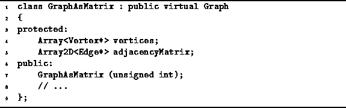

Data Structures and Algorithms
with Object-Oriented Design Patterns in C++
Data Structures and Algorithms
with Object-Oriented Design Patterns in C++
The GraphAsMatrix class is declared in Program  .
The GraphAsMatrix class is a concrete class derived
from the base class Graph which is shown in Program .
Since GraphAsMatrix is a concrete class,
it must provide implementations for all the member functions
declared as pure virtual functions in the base classes--the function prototypes have been elided for the sake of brevity.
.
The GraphAsMatrix class is a concrete class derived
from the base class Graph which is shown in Program .
Since GraphAsMatrix is a concrete class,
it must provide implementations for all the member functions
declared as pure virtual functions in the base classes--the function prototypes have been elided for the sake of brevity.

Program: GraphAsMatrix Class Definition
Each instance of the GraphAsMatrix class
represents an undirected graph, say  .
The two member variables,
vertices and adjacencyMatrix,
are used to represent the sets
.
The two member variables,
vertices and adjacencyMatrix,
are used to represent the sets  and
and  , respectively.
, respectively.
The set of vertices,  , is represented using a one-dimensional
array of pointers to Vertex instances.
The implementation uses the Array<T> class
given in Section .
The set of edges,
, is represented using a one-dimensional
array of pointers to Vertex instances.
The implementation uses the Array<T> class
given in Section .
The set of edges,  , is represented using a two-dimensional
matrix of pointers to Edge instances.
The implementation uses the Array2D<T> class
given in Section .
, is represented using a two-dimensional
matrix of pointers to Edge instances.
The implementation uses the Array2D<T> class
given in Section .
The GraphAsMatrix constructor takes a single argument
of type unsigned int that specifies
the maximum number of vertices that the graph may contain.
This quantity specifies the length of the
array of vertices and the dimensions of the adjacency matrix.
The implementation of the GraphAsMatrix class is left
as programming project for the reader (Project ).
 Copyright © 1997 by Bruno R. Preiss, P.Eng. All rights reserved.
Copyright © 1997 by Bruno R. Preiss, P.Eng. All rights reserved.